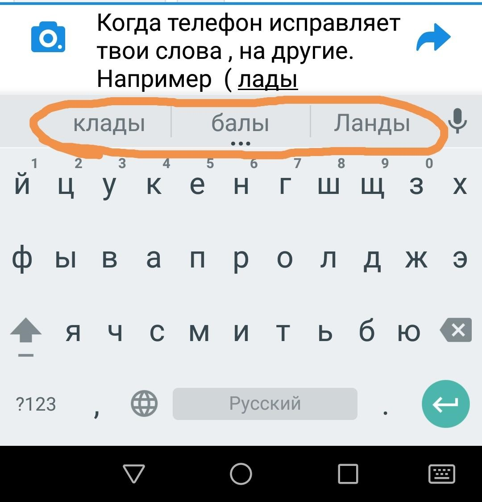

Интересные факты о компьютерах
-
Эффект Купертино
Эффект, когда словарь, текстовый процессор или мобильное устройство начинает при наборе текста думать за человека, исправляя неправильно, по мнению машинного интеллекта, набранные слова, называется “Эффект Купертино”. Однако городок Cupertino, расположенный в американском штате Калифорния, имеет к этому названию очень опосредованное отношение.
В первые текстовые процессоры закладывали написание английского слова “сотрудничество” через дефис – “co-operation”. Если же пользователь набирал это слово слитно, процессор автоматически изменял его на название никому не ведомого американского городка. Ошибка была столь распространенной, что проникала не только на страницы прессы, но и в официальные документы. Но, конечно, до нынешнего безумия с функцией Т9, она оставалась не более чем забавным курьёзом.